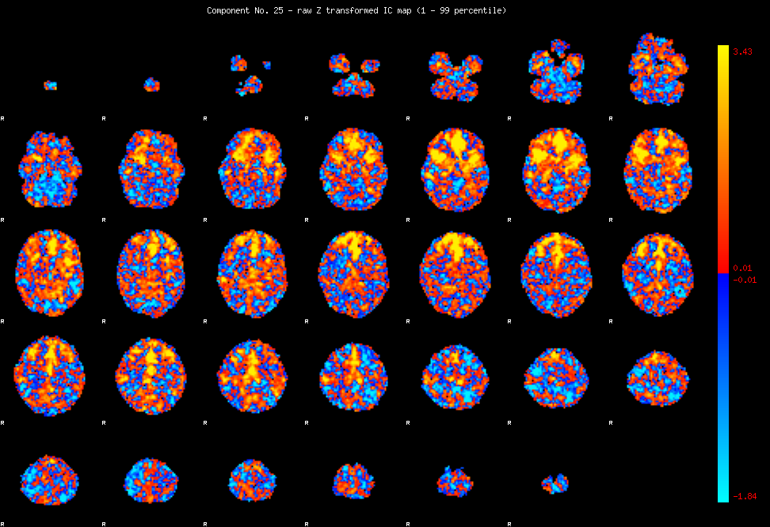
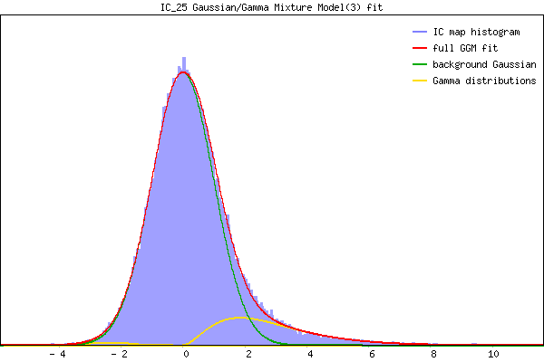

IC_25 Mixture Model fit
Means : 0.000000 2.845879 -2.541709
Vars : 1.000000 2.803983 0.551880
Prop. : 0.870288 0.123724 0.005988
This page produced automatically by MELODIC Version 3.10 - a part of FSL - FMRIB Software Library.